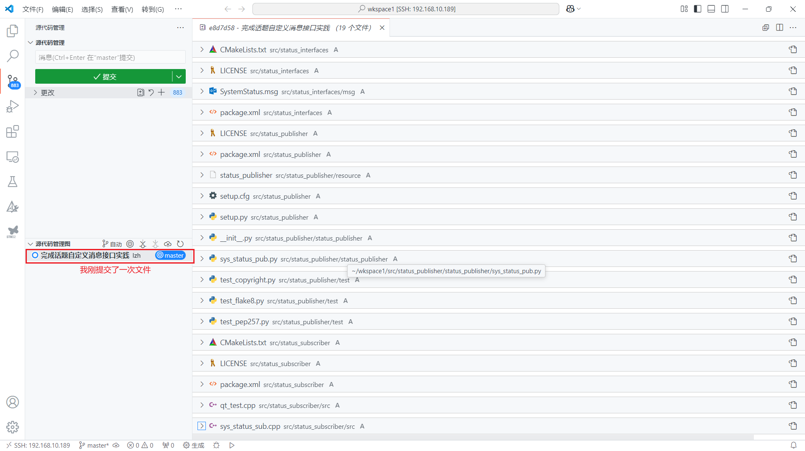
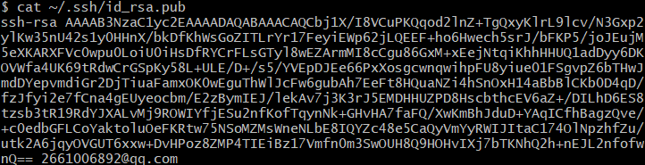
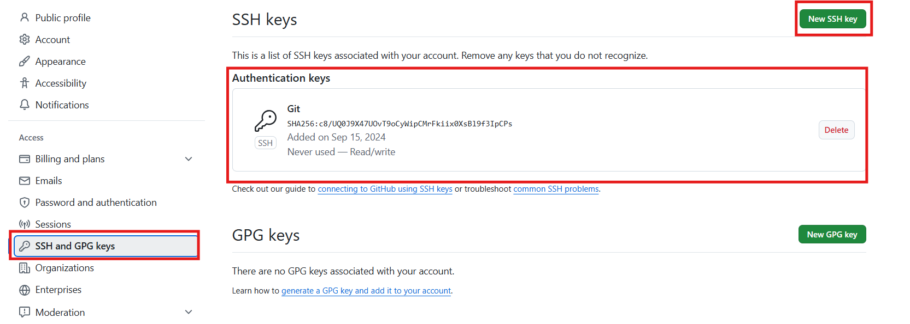
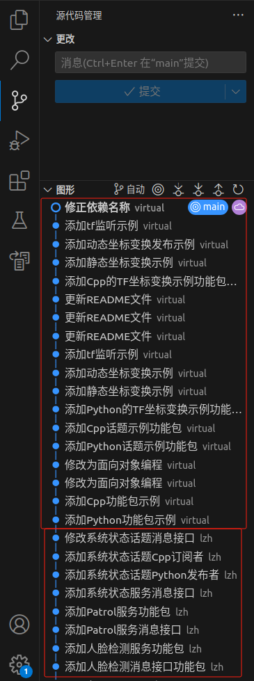
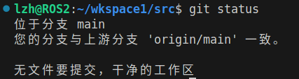
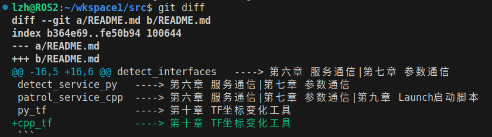
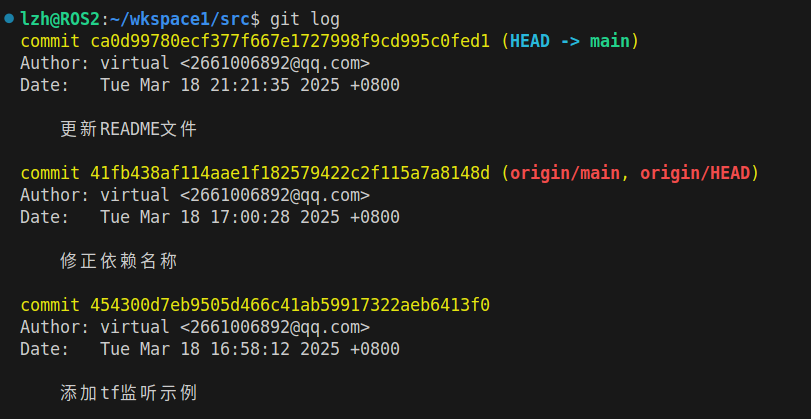
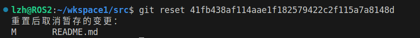
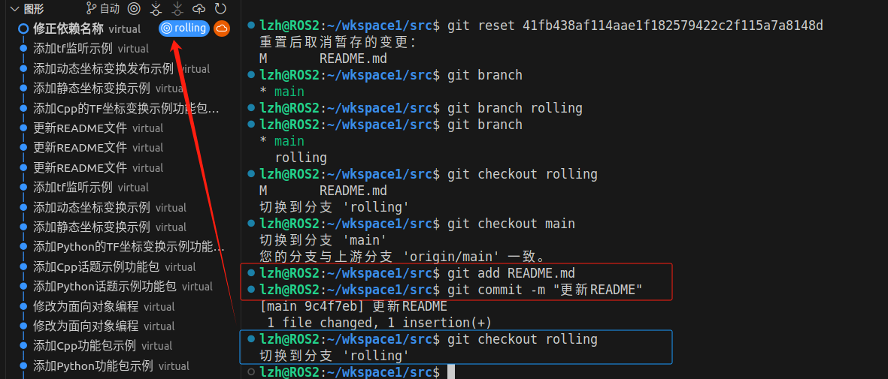
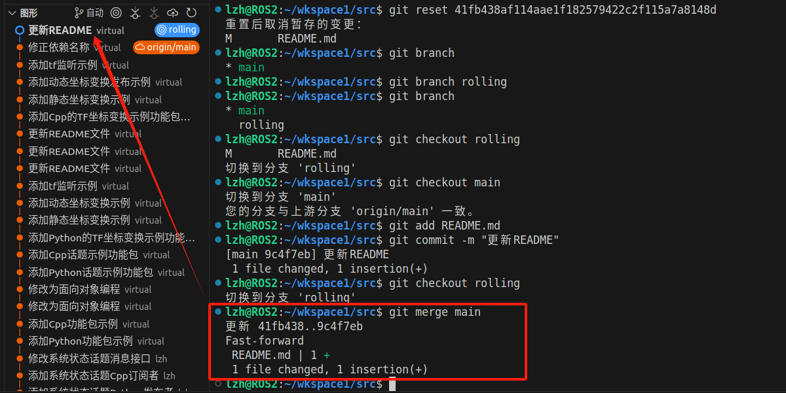

Git
使用Git管理个人项目¶
绑定账户¶
绑定用户名和邮箱。
# <your_name>是你的自定义用户名
git config --global user.name "<your_name>"
# <your_email>是你的邮箱
git config --global user.email "<your_email>"
配置默认分支¶
默认分支一般命名为main或master，如果项目要上传到GitHub可以使用main好一些。
查看Git配置¶
初始化仓库¶
进入要初始化为仓库的目录
如果想要删除仓库使用rm -rf .git(Linux)删除目录就可以了。
提交代码¶
① 添加当文件到暂存区
② 添加整个目录到暂存区
③ 添加当前目录下所有文件到暂存区
④ 删除暂存区所有文件
⑤ 上传暂存区文件
⑥ 查看提交日志
想要看提交了哪些文件可以借助Vscode等编译工具。

忽略文件gitignore¶
在仓库根目录新建.gitignore文件，添加忽略的目录。
Git绑定远程仓库(Github)¶
密钥配置（Github）¶
想要在当前设备上传git仓库到远程仓库(Github)必要绑定Github的密钥，以获得权限。

复制上述内容至GitHub

检查配置是否完成
绑定仓库¶
管理远程仓库¶
若是在另一台设备维护同一个项目，一定先拉取仓库的最新内容，然后再添加新内容。
# 推送仓库最新内容
git push origin main
# 拉取仓库最新内容
git pull origin main
#-------------------------------------------
# 修改分支名称
git branch -m master main
克隆代码¶
克隆代码后，在本地也可以看到作者的上传过程，特别再vscode可以看的比较清楚。因此，若是自己的项目可以克隆后在其他设备维护，但前提是当前设备具有权限。
若下图所示的ROS2仓库管理，前部分是我在RDKX5实机上做的维护，后面是用虚拟机做的维护，可以说是无缝衔接。

Git进阶使用¶
查看文件修改状态¶

同时可以查看具体的修改位置

撤销代码¶
① 并未添加到缓冲区，即未进行git add。
② 已经添加到缓冲区，但为提交更改。
③ 已经提交更改，为上传服务器。
使用git log查看日志

将Git恢复到修改依赖名称的阶段，使用git reset + commit

Git分支¶
Git分支可以用来管理项目的不版本，防止主分支版本混乱。
① 查看分支列表
② 创建新分支
③ 切换分支
两个分支修改提交互不影响，如下图：我在main分支提交了README更新，但rolling依旧是创建时候的样子。

④ 合并分支
将main分支的修改同步到rolling分支，此时需要用到合并分支指令。

⑤ 删除分支